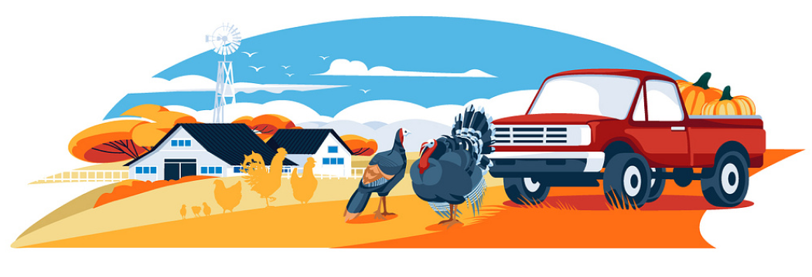

Com nossa plataforma, você anuncia sua colheita e aumenta suas vendas para consumidores, restaurantes e supermercados.
Cadastre seus produtos no AgroLink: informe as informações de cada item. Adicione fotos de alta qualidade para destacar o frescor e a qualidade. Mantenha suas informações atualizadas para garantir uma experiência de compra excepcional.
Organize sua safra no AgroLink: Com as informações cadastradas você terá acesso a toda gestão da sua safra, tenha controle de tudo o que você vendeu e/ou tem no estoque, gerencie e organize tudo da melhor forma.
Sua narrativa e imagens ajudam a conectar melhor com os consumidores, destacando a autenticidade e o cuidado que você coloca em cada etapa do cultivo.
O AgroLink é uma plataforma que conecta diretamente pequenos e médios agricultores aos consumidores, eliminando intermediários. Oferece produtos frescos e orgânicos com transparência e segurança, utilizando blockchain para garantir a autenticidade das transações. Agricultores têm perfis personalizados para uma experiência de compra mais eficiente. A plataforma sugere rotas otimizadas para entregas e promove a melhoria contínua através de feedbacks. Além disso, oferece opções de monetização e suporte adicional para produtores e consumidores.
Com a plataforma gratuita, você obtém:
Cadastro de produtos
Gestão de produtos
Com a assinatura Premium, você obtém:
Cadastro de produtos
Gestão de produtos
Cursos Online
Consultoria Online